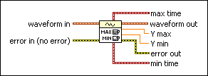
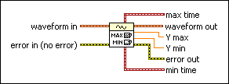

Waveform Min Max VI
Owning Palette: Analog Waveform VIs and Functions
Requires: Base Development System
Determines the maximum and minimum values and their associate time values for a waveform.

 Add to the block diagram Add to the block diagram |
 Find on the palette Find on the palette |
Owning Palette: Analog Waveform VIs and Functions
Requires: Base Development System
Determines the maximum and minimum values and their associate time values for a waveform.

| Add to the block diagram |
Find on the palette |
 |
waveform in is the waveform for which you want to retrieve the maximum and minimum values. |
 |
error in describes error conditions that occur before this node runs. This input provides standard error in functionality. |
 |
max time is the time value at which the maximum data value was reached. |
 |
waveform out returns waveform in unchanged. |
 |
Y max is the maximum data value of the waveform. |
|
Y min is the minimum data value of the waveform. |
 |
error out contains error information. This output provides standard error out functionality. |
|
min time is the time value at which the minimum data value was reached. |
Refer to the Waveform - Min Max VI in the labview\examples\Waveform directory for an example of using the Waveform Min Max VI.
 Open example Find related examples
Open example Find related examples